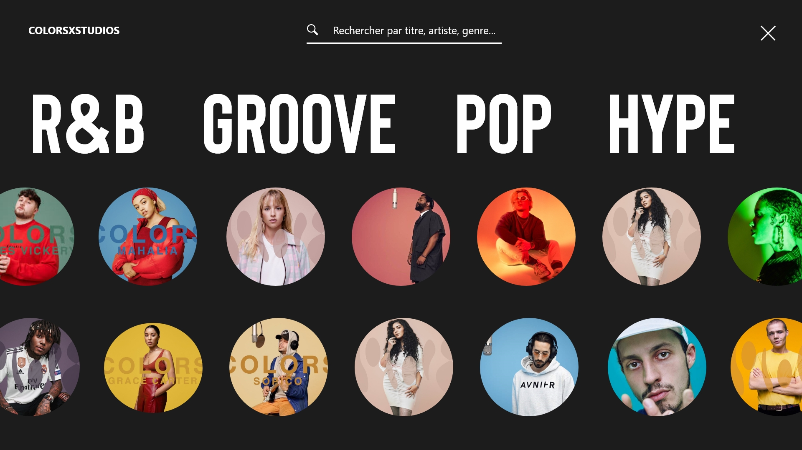
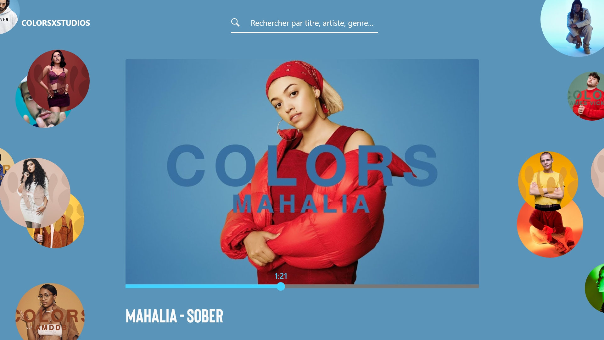
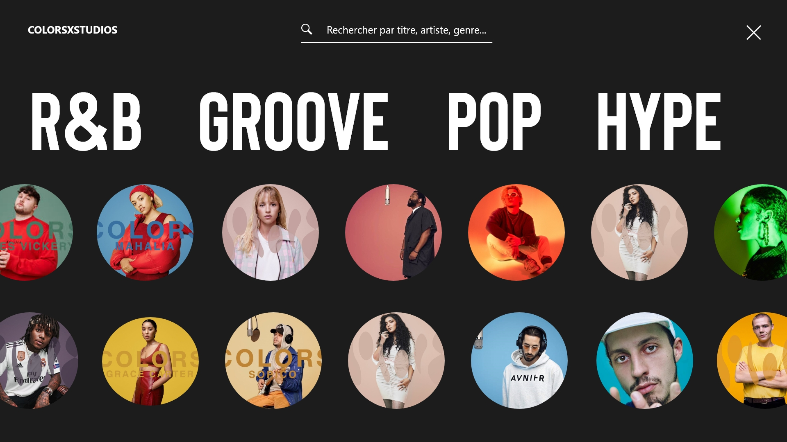
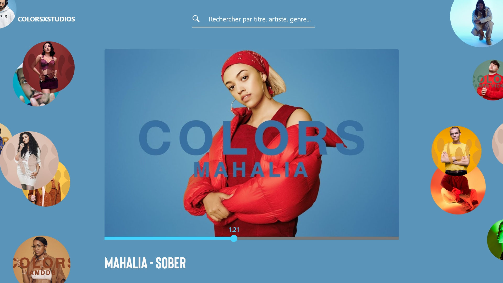

UX/UI Concept Design
Projet personnel
2019
Colors X studio...1 micro, un artiste une couleur…le concept est simple mais génial et m’inspire beaucoup. J’ai essayé d’imaginer à quoi pourrait ressembler l’expérience d’écoute de “Colors”.
 



Images:
Outils :
Colors X Studio
Adobe XD | Photoshop

UX/UI | Conversion

Projet Personnel

UX/UI Design